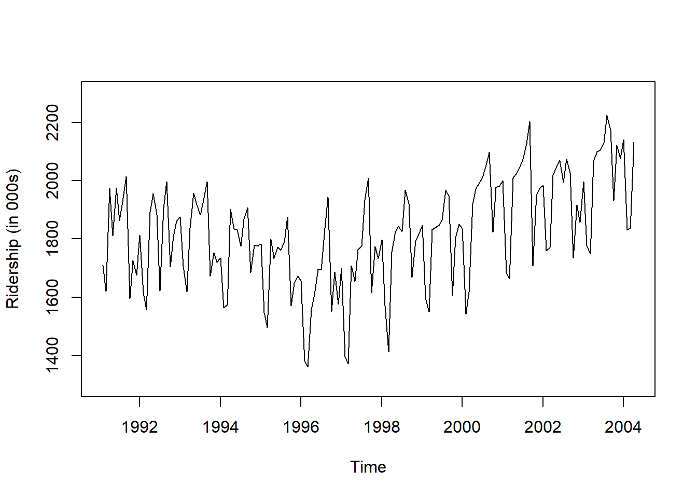
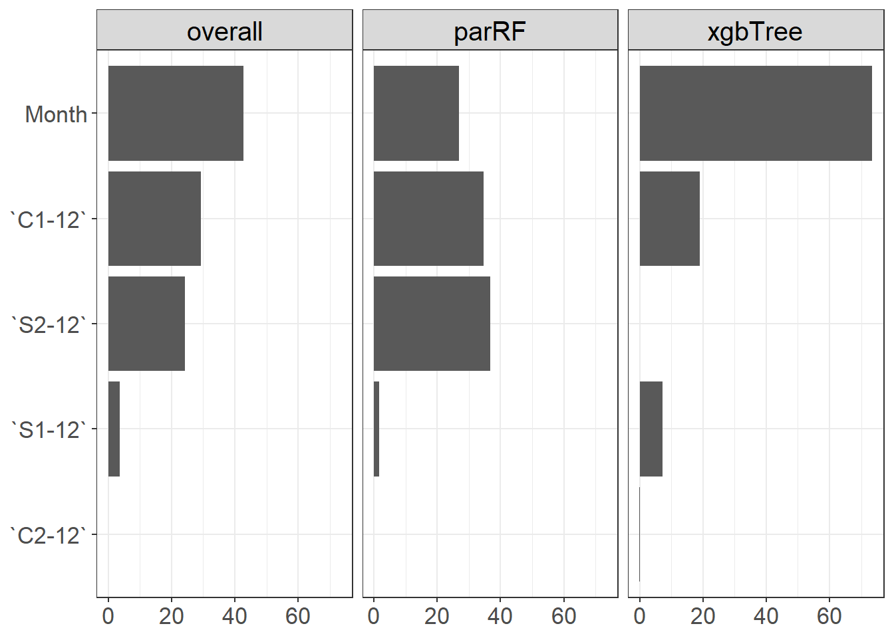

pacman::p_load( "dplyr", "xts",
"caret", "caretEnsemble",
"forecast",
"ggplot2")
library(doParallel)
library(parallel)
registerDoParallel(cores=detectCores())
# In Mac
# guess_encoding("Amtrak.csv")
# Amtrak.data <- read.csv("Amtrak.csv", fileEncoding="EUC-KR")
Amtrak.data <- read.csv(".../Amtrak.csv")
Amtrak.data %>%
as_tibble15 Machine Learning
15.1 Introduction
트리 기반 머신 러닝 기법(Tree-based on Machine Learning Technique)을 시계열에 적용하는 방법에 대해 정리한다.
- 트리 기반 머신 러닝 기법(Tree-based on Machine Learning Technique)은 몇 가지 장점을 가지고 있어 모델링에 널리 사용되는 머신 러닝 방법이다.
- 이해하기 쉽다.
- 트리 구조는 시각화 하기에 간단하며, 탐색적 분석에 유용하다.
- 빠르다.
- 예측 정확도가 우수하다.
- 하지만,
이상치에 예민하다는 단점이 있다.- 트리는 Training Data를 바탕으로 간단한 규치만 배우면서 만들어지기 때문이다.
- 그렇기 때문에,
트리 기반 머신러닝 기법은 추세를 포착할 수 없다. - 그래서
분해(Decomposition)을 이용하여,추세(Trend)가 제거된 Detrend Data에 트리 기반 머신 러닝 기법을 적용해야한다.- 추세는 적절한 시계열 모형을 이용하여 예측한다.
최종 예측 = 머신 러닝의 예측값 + 추세의 예측값
15.2 Application
- Ridership on Amtrak Trains(미국 철도 회사 “Amtrak”에서 수집한 1991년 1월~2004년 3월까지 매달 환승 고객 수) 예제를 이용하여 트리 기반 머신 러닝 기법이 실제 데이터에 어떻게 적용되는지 설명한다.
15.2.1 데이터 불러오기
# A tibble: 159 × 2
Month Ridership
<chr> <dbl>
1 01/01/1991 1709.
2 01/02/1991 1621.
3 01/03/1991 1973.
4 01/04/1991 1812.
5 01/05/1991 1975.
6 01/06/1991 1862.
7 01/07/1991 1940.
8 01/08/1991 2013.
9 01/09/1991 1596.
10 01/10/1991 1725.
# ℹ 149 more rows15.2.2 데이터 전처리
# Convert to ts for Target
ridership.ts <- ts(Amtrak.data$Ridership,
start = c(1991, 2), # 시계열의 시작 연도 / c(1991, 2) : 1991년 2월 -> 첫 번째 시계열은 제거했기 때문
frequency = 12) # 주기 / 월별 시계열로 1년에 12번 관측
# 시계열 그림
plot(ridership.ts,
xlab = "Time", ylab = "Ridership (in 000s)",
ylim = c(1300, 2300))
Caution! CSV 파일로 불러온 데이터를 살펴보면 승객 수를 포함하는 변수 Ridership가 수치형임을 알 수 있다. 시계열 데이터 분석을 위해 함수 ts()를 이용하여 해당 변수를 시계열 객체로 변환해야 한다.
Result! 시계열 그림을 살펴보면 Amtrak 데이터는 U자 형태의 추세를 발견할 수 있으며, 여름(7월과 8월) 동안에 승객이 급증하는 뚜렷한 계절변동도 볼 수 있다.
15.2.3 데이터 분할
Caution! 시계열 데이터 분석 시 모형의 과적합을 피하고 미래 데이터에 대한 예측력을 계산하기 위해 Training Dataset과 Test Dataset으로 분할해야 한다. 시계열 데이터의 경우, 시간에 의존하기 때문에 시간 순서를 고려하여 데이터를 분할해야 한다. 즉, 앞 시점의 데이터를 Training Dataset로 사용하여 모형을 구축하고, 뒷 시점의 데이터를 Test Dataset로 사용하여 구축된 모형의 성능을 평가한다. 여기서는 데이터 분할을 위해 함수 window()를 사용한다.
# Partition for Target
train.ts <- window(ridership.ts,
start = c(1991, 2), # 분할하고자 하는 시계열의 시작 연도 / c(1991, 2) : 1991년 2월 -> 첫 번째 시계열은 제거했기 때문
end = c(2001, 3)) # 분할하고자 하는 시계열의 마지막 연도 / c(2001, 3) : 2001년 3월
test.ts <- window(ridership.ts,
start = c(2001, 4)) # 분할하고자 하는 시계열의 시작 연도 / c(2001, 4) : 2001년 4월
nTrain <- length(train.ts) # Training Dataset의 데이터 포인트 개수
nTest <- length(test.ts) # Test Dataset의 데이터 포인트 개수
train.ts %>%
as_tibble# A tibble: 122 × 1
x
<dbl>
1 1709.
2 1621.
3 1973.
4 1812.
5 1975.
6 1862.
7 1940.
8 2013.
9 1596.
10 1725.
# ℹ 112 more rowstest.ts %>%
as_tibble# A tibble: 37 × 1
x
<dbl>
1 2008.
2 2024.
3 2047.
4 2073.
5 2127.
6 2203.
7 1708.
8 1951.
9 1974.
10 1985.
# ℹ 27 more rowsnTrain[1] 122nTest[1] 3715.2.4 예측 변수 생성
- 머신 러닝 기법을 적용하기 위해 예측 변수(Predictor Variable)를 생성하였다.
- 퓨리에 항(Fourier Terms)
- 달(Month)
# 1. Fourier Term
FT <- fourier(train.ts, K = 2) # K : sine, cosine 쌍의 개수/시계열 데이터의 계절 주기가 2개 이상일 때, K는 계절 주기 수만큼 필요
FT.Test <- fourier(train.ts, K = 2, h = nTest)
# 2. Month
xts(ridership.ts, order = as.Date(ridership.ts)) [,1]
1991-02-01 1708.917
1991-03-01 1620.586
1991-04-01 1972.715
1991-05-01 1811.665
1991-06-01 1974.964
1991-07-01 1862.356
1991-08-01 1939.860
1991-09-01 2013.264
1991-10-01 1595.657
1991-11-01 1724.924
1991-12-01 1675.667
1992-01-01 1813.863
1992-02-01 1614.827
1992-03-01 1557.088
1992-04-01 1891.223
1992-05-01 1955.981
1992-06-01 1884.714
1992-07-01 1623.042
1992-08-01 1903.309
1992-09-01 1996.712
1992-10-01 1703.897
1992-11-01 1810.000
1992-12-01 1861.601
1993-01-01 1875.122
1993-02-01 1705.259
1993-03-01 1618.535
1993-04-01 1836.709
1993-05-01 1957.043
1993-06-01 1917.185
1993-07-01 1882.398
1993-08-01 1933.009
1993-09-01 1996.167
1993-10-01 1672.841
1993-11-01 1752.827
1993-12-01 1720.377
1994-01-01 1734.292
1994-02-01 1563.365
1994-03-01 1573.959
1994-04-01 1902.639
1994-05-01 1833.888
1994-06-01 1831.049
1994-07-01 1775.755
1994-08-01 1867.508
1994-09-01 1906.608
1994-10-01 1685.632
1994-11-01 1778.546
1994-12-01 1775.995
1995-01-01 1783.350
1995-02-01 1548.415
1995-03-01 1496.925
1995-04-01 1798.316
1995-05-01 1732.895
1995-06-01 1772.345
1995-07-01 1761.207
1995-08-01 1791.655
1995-09-01 1874.820
1995-10-01 1571.309
1995-11-01 1646.948
1995-12-01 1672.631
1996-01-01 1656.845
1996-02-01 1381.758
1996-03-01 1360.852
1996-04-01 1558.575
1996-05-01 1608.420
1996-06-01 1696.696
1996-07-01 1693.183
1996-08-01 1835.516
1996-09-01 1942.573
1996-10-01 1551.401
1996-11-01 1686.508
1996-12-01 1576.204
1997-01-01 1700.433
1997-02-01 1396.588
1997-03-01 1371.690
1997-04-01 1707.522
1997-05-01 1654.604
1997-06-01 1762.903
1997-07-01 1775.800
1997-08-01 1934.219
1997-09-01 2008.055
1997-10-01 1615.924
1997-11-01 1773.910
1997-12-01 1732.368
1998-01-01 1796.626
1998-02-01 1570.330
1998-03-01 1412.691
1998-04-01 1754.641
1998-05-01 1824.932
1998-06-01 1843.289
1998-07-01 1825.964
1998-08-01 1968.172
1998-09-01 1921.645
1998-10-01 1669.597
1998-11-01 1791.474
1998-12-01 1816.714
1999-01-01 1846.754
1999-02-01 1599.427
1999-03-01 1548.804
1999-04-01 1832.333
1999-05-01 1839.720
1999-06-01 1846.498
1999-07-01 1864.852
1999-08-01 1965.743
1999-09-01 1949.002
1999-10-01 1607.373
1999-11-01 1803.664
1999-12-01 1850.309
2000-01-01 1836.435
2000-02-01 1541.660
2000-03-01 1616.928
2000-04-01 1919.538
2000-05-01 1971.493
2000-06-01 1992.301
2000-07-01 2009.763
2000-08-01 2053.996
2000-09-01 2097.471
2000-10-01 1823.706
2000-11-01 1976.997
2000-12-01 1981.408
2001-01-01 2000.153
2001-02-01 1683.148
2001-03-01 1663.404
2001-04-01 2007.928
2001-05-01 2023.792
2001-06-01 2047.008
2001-07-01 2072.913
2001-08-01 2126.717
2001-09-01 2202.638
2001-10-01 1707.693
2001-11-01 1950.716
2001-12-01 1973.614
2002-01-01 1984.729
2002-02-01 1759.629
2002-03-01 1770.595
2002-04-01 2019.912
2002-05-01 2048.398
2002-06-01 2068.763
2002-07-01 1994.267
2002-08-01 2075.258
2002-09-01 2026.560
2002-10-01 1734.155
2002-11-01 1916.771
2002-12-01 1858.345
2003-01-01 1996.352
2003-02-01 1778.033
2003-03-01 1749.489
2003-04-01 2066.466
2003-05-01 2098.899
2003-06-01 2104.911
2003-07-01 2129.671
2003-08-01 2223.349
2003-09-01 2174.360
2003-10-01 1931.406
2003-11-01 2121.470
2003-12-01 2076.054
2004-01-01 2140.677
2004-02-01 1831.508
2004-03-01 1838.006
2004-04-01 2132.446Month <- as.Date(ridership.ts) %>% # Date 추출
lubridate::month() # Month 추출
## 퓨리에 항과 합치기
Train.X <- cbind("Month"= Month[1:length(train.ts)], FT)
Test.X <- cbind("Month"= Month[-(1:length(train.ts))], FT.Test) 15.2.5 분해
- 트리 기반 머신러닝 기법은 추세를 포착하기 못하기 떄문에, 추세를 제거한 Detrend Data를 필요로 한다.
- Seasonal and Trend decomposition using Loess (STL) 분해를 이용하여 시계열 데이터를 추세, 계절성과 나머지 성분으로 분해하였다.
- 만약, 시계열 데이터가 다중 계절성을 갖는다면,
mstl()을 이용할 수 있다.
- 만약, 시계열 데이터가 다중 계절성을 갖는다면,
- 추세를 제거하고
계절성과 나머지 성분을 더한 값을 Target으로 한 Training Dataset을 생성한다.
decomp.ts <- stl(train.ts, s.window = "periodic", robust = TRUE)$time.series
# decomp.ts <- mstl(Power.msts, s.window = "periodic", robust = TRUE) # 다중 계절성인 경우
# Target without Trend
Target <- decomp.ts %>%
data.frame %>%
rowwise() %>% # 행별로 작업
dplyr::mutate(y=sum( seasonal, remainder )) %>% # Target = Season + Remainder => Detrend
dplyr::select(y)
Train.Data <- cbind(Target, Train.X)15.2.6 머신 러닝 적용
- 위에서 생성한 Training Dataset에 머신 러닝 기법을 적용한다.
caretpackage를 이용하여, 가장 대표적인랜덤포레스트(Random Forest)와eXtreme Gradient Boosting(XGBoost)를 적용해보았다.- Hyperparameter는 Random Search를 이용하여 최적의 조합을 찾았다.
- 게다가,
caretEnsemblepackage를 이용하여, 앙상블(Ensemble) 기법Stacking도 적용해보았다.
15.2.6.1 Random Forest
- Bagging을 이용한 트리 기반 모형이다.
- 나무를 분할할 때 랜덤적으로 후보 예측 변수를 선택함으로써, 생성된 나무들의 연관성은 감소된다.
- Random Forest에서 Hyperparameter는
mtry로 트리가 분할될 때 랜덤적으로 선택되는 후보군 예측 변수 갯수이다.
set.seed(100)
fitControl <- trainControl(method = "adaptive_cv", # cv, repeatedcv
number = 5,
repeats = 5,
adaptive = list(min = 5,
alpha = 0.05,
method = "BT",
complete = TRUE),
search = "random",
allowParallel = TRUE)
RF <- function(train, tuneLength, ntree = 500, nodesize = 5){
set.seed(100) # seed 고정 For Cross Validation
caret.rf <- caret::train(y~., data = train,
method = "parRF", # Tune Parameter : mtry
trControl = fitControl,
tuneLength = tuneLength,
ntree = ntree,
nodesize = nodesize, # nodesize : Terminal Node의 최소 크기
importance = TRUE)
return(caret.rf)
}
RF.Caret <- RF(Train.Data,
tuneLength = 2, # tuneLength (탐색할 후보 모수 갯수)
ntree = 100) # ntree : 생성할 Tree 수
RF.CaretParallel Random Forest
122 samples
5 predictor
No pre-processing
Resampling: Adaptively Cross-Validated (5 fold, repeated 5 times)
Summary of sample sizes: 97, 98, 98, 98, 97, 98, ...
Resampling results across tuning parameters:
mtry RMSE Rsquared MAE Resamples
1 63.10983 0.8093260 47.98518 5
3 59.44825 0.8251996 45.54272 25
RMSE was used to select the optimal model using the smallest value.
The final value used for the model was mtry = 3.RF.Caret$finalModel
Call:
randomForest(x = "x", y = "y", ntree = 17, mtry = 3L, nodesize = 5, importance = TRUE)
Type of random forest: regression
Number of trees: 102
No. of variables tried at each split: 3RF.Caret$finalModel$tuneValue mtry
2 315.2.6.2 XGBoost
- Boosting을 이용한 트리 기반 모형이다.
- 손실함수와 경사하강법을 이용하는 Gradient Boosting의 단점을 해결하기 위해 제안되었다.
- 가장 큰 특징으로는, 병렬 처리로 인해 빠르고 조기 종료가 가능하다는 것이다.
- XGBoost에서 Hyperparameter는 다음과 같다.
nrounds: 반복 수max_depth: Tree의 최대 깊이eta: Learning Lategamma: 분할하기 위해 필요한 최소 손실 감소, 클수록 분할이 쉽게 일어나지 않음colsample_bytree: Tree 생성 때 사용할 예측변수 비율min_child_weight: 한 leaf 노드에 요구되는 관측치에 대한 가중치의 최소 합subsample: 모델 구축시 사용할 Data비율로 1이면 전체 Data 사용
set.seed(100)
fitControl <- trainControl(method = "adaptive_cv", # cv, repeatedcv
number = 5,
repeats = 5,
adaptive = list(min = 5,
alpha = 0.05,
method = "BT",
complete = TRUE),
search = "random",
allowParallel = TRUE)
XGBoost <- function(train, tuneLength){
set.seed(100) # seed 고정 For Cross Validation
caret.xgb <- caret::train(y~., data = train,
method = "xgbTree",
trControl = fitControl,
# objective = "reg:squarederror", # error(The following parameters were provided multiple times)
tuneLength = tuneLength # tuneLength (탐색할 후보 모수 갯수)
)
return(caret.xgb)
}
XGB.Caret <- XGBoost(Train.Data, 2)
XGB.CareteXtreme Gradient Boosting
122 samples
5 predictor
No pre-processing
Resampling: Adaptively Cross-Validated (5 fold, repeated 5 times)
Summary of sample sizes: 97, 98, 98, 98, 97, 98, ...
Resampling results across tuning parameters:
eta max_depth gamma colsample_bytree min_child_weight subsample nrounds RMSE Rsquared MAE Resamples
0.2228220 9 1.702621 0.6528662 3 0.7517663 624 57.50332 0.8364905 44.61057 5
0.4876292 3 5.465586 0.5499986 5 0.8219133 358 56.30900 0.8395436 43.37319 25
RMSE was used to select the optimal model using the smallest value.
The final values used for the model were nrounds = 358, max_depth = 3, eta = 0.4876292, gamma = 5.465586, colsample_bytree = 0.5499986, min_child_weight = 5 and subsample = 0.8219133.XGB.Caret$finalModel##### xgb.Booster
raw: 351.4 Kb
call:
xgboost::xgb.train(params = list(eta = param$eta, max_depth = param$max_depth,
gamma = param$gamma, colsample_bytree = param$colsample_bytree,
min_child_weight = param$min_child_weight, subsample = param$subsample),
data = x, nrounds = param$nrounds, objective = "reg:squarederror")
params (as set within xgb.train):
eta = "0.48762916797353", max_depth = "3", gamma = "5.46558595029637", colsample_bytree = "0.549998590815812", min_child_weight = "5", subsample = "0.82191331172362", objective = "reg:squarederror", validate_parameters = "TRUE"
xgb.attributes:
niter
callbacks:
cb.print.evaluation(period = print_every_n)
# of features: 5
niter: 358
nfeatures : 5
xNames : Month `S1-12` `C1-12` `S2-12` `C2-12`
problemType : Regression
tuneValue :
nrounds max_depth eta gamma colsample_bytree min_child_weight subsample
2 358 3 0.4876292 5.465586 0.5499986 5 0.8219133
obsLevels : NA
param :
list()XGB.Caret$finalModel$tuneValue nrounds max_depth eta gamma colsample_bytree min_child_weight subsample
2 358 3 0.4876292 5.465586 0.5499986 5 0.821913315.2.6.3 Stacking
- Stacking은 앙상블 기법 중 하나로, 비슷한 성능을 가진 모형들을 결합함으로써, 예측 성능을 항상 시키기 위해 적용될 수 있다.
- Stacking은 두 종류의 모형들이 필요하다.
- Individual Model : 원본 Training Data을 이용하여 학습할 모형
- Individual Model은
여러개의 서로 다른 머신 러닝 알고리즘로 구성
- Individual Model은
- Final Model : Individual Model들의 예측 결과를 결합한 Data를 Training Data로 사용하여 학습할 모형
- Individual Model : 원본 Training Data을 이용하여 학습할 모형
- Stacking의 적용 알고리즘은 다음과 같다.
- 원본 Training Data에
서로 다른 머신 러닝 알고리즘을 이용하여 예측 결과를 생성한다. - 생성된 예측 결과를 결합하여 Final Model에 대한 Training Data를 생성한다.
- 위에서 생성된 Training Data를 이용하여 Final Model을 학습시킨다.
- 원본 Training Data를 기반으로 학습한 모형에 원본 Test Data를 이용하여 예측 결과를 생성한다.
- 생성된 예측 결과를 결합하여 Final Model에 대한 Test Data를 생성한다.
- 위에서 생성된 Test Data를 이용하여 Final Model의 예측 결과와 원본 Test Data의 Target과 비교한다.
- 원본 Training Data에
- 자세한 코드는 여기를 참조한다.
- 앞써, 원본 Training Data에 적합시킨 Random Forest와 XGBoost의 Hyperparameter 결과를 기반으로 생성된 예측 결과들을 결합하여 스태킹하였다.
caretEnsemblepackage의caretList()를 이용하여, Individual Model을 선언하고,caretStack()으로 Final Model을 선언한다.
# Ref. https://cran.r-project.org/web/packages/caretEnsemble/vignettes/caretEnsemble-intro.html
# https://github.com/zachmayer/caretEnsemble/blob/master/R/caretStack.R
# 1. Modeling for Stacking (Declare Individual Model)
set.seed(100)
fitControl <- trainControl(method = "repeatedcv", # adaptive_cv
number = 5,
repeats = 5,
# adaptive = list(min = 5,
# alpha = 0.05,
# method = "BT",
# complete = TRUE),
# search = "random", # grid
savePredictions = "final", # 최적 모수에 대한 예측 저장
# classProbs = TRUE, # 각 클래스에 대한 확률 저장(Classification)
index = createResample(Train.Data$y, 1), # index : 각 resapling에 대한 요소, Training에 사용되는 행 번호/ createResample : 붓스트랩
allowParallel = TRUE)
# 원본 Training Data에 학습시킨 Hyperparameter 결과
alg_tune_list <- list( # Do not use custom names in list. Will give prediction error with greedy ensemble. Bug in caret.
parRF = caretModelSpec(method="parRF",
importance = TRUE,
nodeside = 5,
tuneGrid = expand.grid(mtry=RF.Caret$finalModel$tuneValue$mtry)),
xgbTree = caretModelSpec(method="xgbTree",
tuneGrid = expand.grid(nrounds = XGB.Caret$finalModel$tuneValue$nrounds,
max_depth = XGB.Caret$finalModel$tuneValue$max_depth,
eta = XGB.Caret$finalModel$tuneValue$eta,
gamma = XGB.Caret$finalModel$tuneValue$gamma,
colsample_bytree = XGB.Caret$finalModel$tuneValue$colsample_bytree,
min_child_weight = XGB.Caret$finalModel$tuneValue$min_child_weight,
subsample = XGB.Caret$finalModel$tuneValue$subsample)))
set.seed(100)
multi_mod <- caretList(y~., data = Train.Data, trControl = fitControl,
tuneList = alg_tune_list) # search = "grid"
multi_mod$parRFParallel Random Forest
122 samples
5 predictor
No pre-processing
Resampling: Cross-Validated (5 fold, repeated 5 times)
Summary of sample sizes: 122
Resampling results:
RMSE Rsquared MAE
56.16162 0.834962 43.05662
Tuning parameter 'mtry' was held constant at a value of 3multi_mod$xgbTreeeXtreme Gradient Boosting
122 samples
5 predictor
No pre-processing
Resampling: Cross-Validated (5 fold, repeated 5 times)
Summary of sample sizes: 122
Resampling results:
RMSE Rsquared MAE
57.12452 0.8319228 42.75148
Tuning parameter 'nrounds' was held constant at a value of 358
Tuning parameter 'max_depth' was held constant at a value of 3
Tuning parameter 'eta' was held constant at a value of 0.4876292
Tuning parameter 'gamma' was held constant at a value of 5.465586
Tuning parameter 'colsample_bytree' was held constant at a value of 0.5499986
Tuning parameter 'min_child_weight' was held
constant at a value of 5
Tuning parameter 'subsample' was held constant at a value of 0.8219133# 2. Stacking (개별 모형들의 예측값을 결합한 Data를 Training data로 쓰는 Final Model)
set.seed(100)
stackControl <- trainControl(method = "adaptive_cv",
number = 5,
repeats = 5,
adaptive = list(min = 5,
alpha = 0.05,
method = "BT",
complete = TRUE),
search = "random",
allowParallel = TRUE)
set.seed(100)
stack.xgb <- caretStack(multi_mod, method = "xgbTree", # Final Model
trControl = stackControl,
tuneLength = 2) # 모수 후보 갯수
stack.xgbA xgbTree ensemble of 2 base models: parRF, xgbTree
Ensemble results:
eXtreme Gradient Boosting
38 samples
2 predictor
No pre-processing
Resampling: Adaptively Cross-Validated (5 fold, repeated 5 times)
Summary of sample sizes: 30, 31, 31, 30, 30, 30, ...
Resampling results across tuning parameters:
eta max_depth gamma colsample_bytree min_child_weight subsample nrounds RMSE Rsquared MAE Resamples
0.2228220 9 1.702621 0.6528662 3 0.7517663 624 52.61384 0.8761797 43.05825 25
0.4876292 3 5.465586 0.5499986 5 0.8219133 358 52.54666 0.8693930 43.80968 5
RMSE was used to select the optimal model using the smallest value.
The final values used for the model were nrounds = 624, max_depth = 9, eta = 0.222822, gamma = 1.702621, colsample_bytree = 0.6528662, min_child_weight = 3 and subsample = 0.7517663.stack.xgb$ens_model$finalModel##### xgb.Booster
raw: 654 Kb
call:
xgboost::xgb.train(params = list(eta = param$eta, max_depth = param$max_depth,
gamma = param$gamma, colsample_bytree = param$colsample_bytree,
min_child_weight = param$min_child_weight, subsample = param$subsample),
data = x, nrounds = param$nrounds, objective = "reg:squarederror")
params (as set within xgb.train):
eta = "0.222822001739405", max_depth = "9", gamma = "1.70262051047757", colsample_bytree = "0.652866207249463", min_child_weight = "3", subsample = "0.751766284287442", objective = "reg:squarederror", validate_parameters = "TRUE"
xgb.attributes:
niter
callbacks:
cb.print.evaluation(period = print_every_n)
# of features: 2
niter: 624
nfeatures : 2
xNames : parRF xgbTree
problemType : Regression
tuneValue :
nrounds max_depth eta gamma colsample_bytree min_child_weight subsample
1 624 9 0.222822 1.702621 0.6528662 3 0.7517663
obsLevels : NA
param :
list()stack.xgb$ens_model$finalModel$tuneValue nrounds max_depth eta gamma colsample_bytree min_child_weight subsample
1 624 9 0.222822 1.702621 0.6528662 3 0.751766315.2.6.4 Stacking with GLM
- Stacking의 Final Model를 Generalized Linear Model(GLM)으로 하면, Individual Model들의 예측 결과들에 가중치를 곱하여 더한 것과 같다.
caretEnsemblepackage의caretEnsemble()를 이용하면 Final Model이GLM이며, 여기의 R code를 확인하면 된다.- 최종 예측 결과 \(\hat{Y}\)는 다음과 같다.
\[ \begin{aligned} \hat{Y} = \beta_{0} + \sum^{m}_{i=1} \hat{y}_{i} \end{aligned} \]
- \(m\) : Individual Model 개수
- \(\hat{y}_{i}\) : \(i\)번째 Individual Model의 예측 결과
set.seed(100)
greedyEnsemble <- caretEnsemble(multi_mod, trControl = trainControl(method = "cv", number=5))
greedyEnsembleA glm ensemble of 2 base models: parRF, xgbTree
Ensemble results:
Generalized Linear Model
38 samples
2 predictor
No pre-processing
Resampling: Cross-Validated (5 fold)
Summary of sample sizes: 30, 31, 31, 30, 30
Resampling results:
RMSE Rsquared MAE
57.85064 0.8220711 43.60171greedyEnsemble$ens_model$finalModel
Call: NULL
Coefficients:
(Intercept) parRF xgbTree
-8.9459 0.6312 0.3265
Degrees of Freedom: 37 Total (i.e. Null); 35 Residual
Null Deviance: 704600
Residual Deviance: 115500 AIC: 420.6summary(greedyEnsemble)The following models were ensembled: parRF, xgbTree
They were weighted:
-8.9459 0.6312 0.3265
The resulting RMSE is: 57.8506
The fit for each individual model on the RMSE is:
method RMSE RMSESD
parRF 56.16162 NA
xgbTree 57.12452 NA15.2.6.4.1 변수 중요도
VI <- varImp(greedyEnsemble)
varImp(greedyEnsemble) overall parRF xgbTree
`C2-12` 0.04640824 0.000000 0.1361284
`S1-12` 3.58731235 1.685183 7.2646621
`S2-12` 24.20118115 36.719376 0.0000000
`C1-12` 29.38080906 34.725737 19.0475635
Month 42.78428920 26.869704 73.5516460VI$x <- as.character(row.names(VI))
VI2 <- reshape2::melt(VI, id.vars="x",
variable.name="Type",
value.name='VI')
ggplot(VI2, aes(x=reorder(x, VI), y=VI)) +
geom_bar(stat="identity", position=position_dodge(), show.legend = F) +
facet_wrap(.~ Type, nrow=1) +
xlab("") +
ylab("") +
coord_flip() +
theme_bw() +
theme(axis.text.x = element_text(size = 13), # angle = 45, vjust = 1, hjust = 1
axis.text.y = element_text(size = 13),
axis.title = element_blank(),
plot.title = element_blank(),
legend.title = element_blank(),
strip.text.x = element_text(size=15, color="black"))
15.2.7 예측
- 최종 예측은 추세의 예측값과 머신 러닝 기법에 의한 예측값을 더하여 생성된다.
- 추세는 시계열 모형 (예: ARIMA)을 이용하여 예측
15.2.7.1 추세 예측
- 여기에서는 ARIMA 모형을 이용하여 추세를 예측하였다.
# Trend
trend.part <- data.frame(decomp.ts)$trend %>% # Only Trend of Training Data
ts()
# Fitting ARIMA for Trend
trend.fit.arima <- auto.arima(trend.part)
# Forecast
trend.arima.pred <- forecast(trend.fit.arima, nTest)
trend.arima.pred$mean Time Series:
Start = 123
End = 159
Frequency = 1
[1] 1966.465 1970.881 1975.297 1979.538 1983.778 1987.971 1992.164 1996.344 2000.524 2004.701 2008.877 2013.053 2017.228 2021.403 2025.578 2029.753 2033.928 2038.104 2042.279 2046.454 2050.629
[22] 2054.804 2058.979 2063.154 2067.329 2071.504 2075.679 2079.854 2084.029 2088.204 2092.379 2096.554 2100.729 2104.904 2109.079 2113.255 2117.43015.2.7.2 최종 예측
# 최종 예측(Seasonal + Remainder + Trend)
Pred.RF <- predict(RF.Caret, Test.X) + trend.arima.pred$mean
Pred.XGB <- predict(XGB.Caret, Test.X) + trend.arima.pred$mean
stack.Pred.XGB <- predict(stack.xgb, Test.X) + trend.arima.pred$mean
stack.Pred.GLM <- predict(greedyEnsemble, Test.X) + trend.arima.pred$mean# Accuracy
acc_RF <- accuracy(c(Pred.RF), test.ts)
acc_XGB <- accuracy(c(Pred.XGB), test.ts)
acc_stack.XGB <- accuracy(c(stack.Pred.XGB), test.ts)
acc_stack.GLM <- accuracy(c(stack.Pred.GLM), test.ts)
acc_RF ME RMSE MAE MPE MAPE ACF1 Theil's U
Test set -42.32877 74.74778 51.49535 -2.204272 2.65509 0.5875656 0.4437575acc_XGB ME RMSE MAE MPE MAPE ACF1 Theil's U
Test set -44.1703 75.31189 53.66022 -2.324207 2.784019 0.5157991 0.4438984acc_stack.XGB ME RMSE MAE MPE MAPE ACF1 Theil's U
Test set -50.11774 89.17262 65.40117 -2.630807 3.360414 0.3994761 0.5275868acc_stack.GLM ME RMSE MAE MPE MAPE ACF1 Theil's U
Test set -36.0741 72.51314 50.15821 -1.913242 2.594745 0.5638888 0.4281346